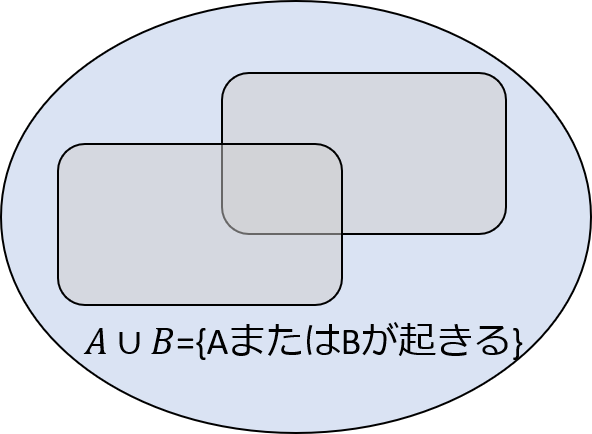
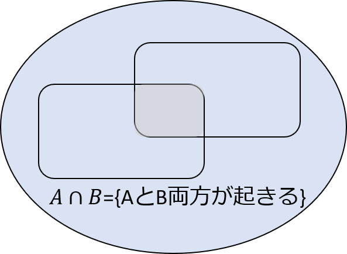
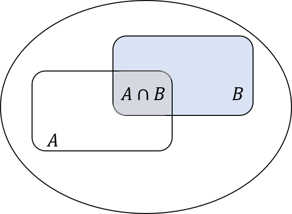

Story and Quiz − Causal inference III
Keywords: DAG, intermediate factor, confounding/information-bias/selection-bias, covariate selection, observational study
調整すべき因子かどうかってどうやって見分けるの？
お父さん「まだ話は続くよ。ここからの話題はDAGと確率変数の関係について。まず、確率の基本について思い出してみよう」
 確率の復習
確率の復習
同時確率と条件付確率
複数の事象を扱うとき、事象が同時に起こる確率（同時確率）と、順番に起こる確率（条件付確率）を区別することが大切です。たとえば2種類の事象AとBがあったとしましょう。「AまたはBが起きる」という事象は、和集合\(A\cup{B}\)で表します。「AかつBが起きる」という事象は、積集合\(A\cap{B}\)で表します。


同時確率は、AとB両方が同時に起きる確率のことです。集合の記号を用いると、\(\mathrm{Pr}(A\cap{B})\)と書くことができます。
条件付確率は、先にどちらかの事象が起きて、その結果を知った後に、別の事象が起きる確率のことです。事象Bが起きたことを条件付けた下で事象Aの起きる確率は、AとBの積事象の確率を、Bが起きる確率で割ったもので表すことができます。
\(\mathrm{Pr}(A|B)=\frac{\mathrm{Pr}(A\cap{B})}{\mathrm{Pr}(B)}\)
ベン図で表すなら、この確率の分母は集合Bに、分子は積集合\(A\cap{B}\)に対応します。また、上の式を変形することで、同時確率と条件付確率に、\(\mathrm{Pr}(A\cap{B})=\mathrm{Pr}(A|B)\mathrm{Pr}(B)\)という関係があることがわかります。

独立性と条件付き独立性
定義をきちんと思い出してほしいことがもうひとつあります。それは独立性です。事象AとBが独立であるとは、積集合の確率が、それぞれの事象の確率の積と等しいことと定義されます。
\(\mathrm{Pr}(A\cap{B})=\mathrm{Pr}(A)\mathrm{Pr}(B)\)
事象AとBに加えて、第3の事象Cがあるとき、Cで条件付けたAとBの同時分布を考えることができますよね。この分布における独立性を、「Cで条件付けた独立性」や「条件付独立性」といいます。条件付独立性もまた、積集合の確率が、それぞれの事象の確率の積と等しいことと定義することができます。
\(\mathrm{Pr}(A\cap{B}|C)=\mathrm{Pr}(A|C)\mathrm{Pr}(B|C)\)
お父さん「準備が整ったので、DAGと確率変数の関係について説明しよう」
私「ふむふむ」
お父さん「Aの確率分布がBに依存することを、矢印で表すことにする。つまり、Bで条件付けたAの確率は、B→Aで表される。逆に、AとBが独立なら、矢印はない。このルールを使えば、DAGを条件付確率と対応付けることができそうでしょ。そうすると独立性や相関性について考えることができる」
私「確率分布って正規分布とかそういうの？」
お父さん「そうきたか。えっとね、正規分布は条件付確率じゃない。でも、たとえばロジスティック回帰だったら、条件付確率を表すから、それをイメージしてもいい。ここでは具体的な確率分布を意図しているわけじゃなくて、もっと定性的で、一般的な話をしてるんだけどね」
私「ふーん」
お父さん「確率変数によって別の確率変数が影響を受けるためには、なんらかの関連が必要だよね」
私「そりゃそうだ」
お父さん「統計学では、一般に、それは条件付確率だったり、相関だったりする。一方で、DAGではそれをグラフ上の有向パスで表している。胃がんの例で用いたDAGに、このルールを適用してみてよ。たとえばAからDに入る矢印はないでしょ。このことは、A以外の変数であるB、C、Eで条件付けると、DはAと独立という意味になる」
私「えーっと、Aは性格、Dは胃がん発生だっけ。年齢も、体質も、ピロリ菌除菌の有無も同じだったら、性格に関係なく、胃がんリスクは等しいと仮定しているって意味なのかな？」
お父さん「そういうこと。次に、DAG全体について考えてみてよ。さっきのグラフでは、AからB、BからA、AからD、BからEへの矢印はないよね。このことは、AはBに直接影響せず、BはAに直接影響せず、AはDに直接影響せず、BはEに直接影響しないという仮定を表している。もっといえば、これは、さらに、AがBを介して伝わるDへの効果はない、という意味にもなる。このような依存関係を条件付分布で表すと、以下の5つの式のようになる。これがさっきのDAGに対応する確率分布だよ」
\(\mathrm{Pr}(A|B,C,D,E)=\mathrm{Pr}(A)\)
\(\mathrm{Pr}(B|A,C,D,E)=\mathrm{Pr}(B)\)
\(\mathrm{Pr}(C|A,B,D,E)=\mathrm{Pr}(C|A,B)\)
\(\mathrm{Pr}(D|A,B,C,E)=\mathrm{Pr}(D|B,C,E)\)
\(\mathrm{Pr}(E|A,B,C,D)=\mathrm{Pr}(E|A,C)\)
私「ふーん。なんだか具体性がなくて、それでって思っちゃうよ。話の終着点がみえない」
お父さん「そっか。ここまでの話ではね、DAGと条件付確率を対応付けるルールを説明したかったんだ。簡単にいうと、条件付けの方の変数から、条件を付けられる変数の方に、矢印が入るようなルールで、DAGと条件付確率を結びつけることができる。このルールを踏まえて、合流点の意味を考えてみてよ。この図でEとDに相関はある？相関はない？」

私「じゃあもうちょっとだけ話に付き合ってあげる。うーんと。この図にはE→CとD→Cがある。これって、\(\mathrm{Pr}(C|D,E)\)って意味だっけ？」
お父さん「そうだったね」
私「さらに、EとDに入る矢印はない。つまり、CとDとEの確率分布は、それぞれ\(\mathrm{Pr}(C|D,E)\)と\(\mathrm{Pr}(D)\)と\(\mathrm{Pr}(E)\)ってことになる。でもここからがわかんないな」
お父さん「確率の復習で述べた同時分布と条件付確率の関係を思い出してみて。同時確率は、\(\mathrm{Pr}(C,E,D)=\mathrm{Pr}(C|D,E)\mathrm{Pr}(D)\mathrm{Pr}(E)\)と表されるでしょ。この式がポイントなんだ。これって、EとDは独立という意味でしょ」
私「うん。確率分布が積で書けてるからね」
お父さん「さらに、この図は、最初に示した合流点の図とは違って、E→Dはない。つまり、曝露変数とアウトカムに因果関係はない状況を想定したものといえる。っていうことはさ。Cについてなにも操作しなくても、EとDに相関があれば因果関係があるし、相関がなければ因果関係はないってことになるでしょ。相関があるかどうかは、曝露変数EとアウトカムDのデータを集めれば、確認できるよね」
私「なんとなくいいたいことがわかってきた。この図みたいにCが合流点だったら、調整なんかせずにEとDの相関を調べればいいってことね」
お父さん「簡単にいうとそういうこと。合流点があると、変数間の相関関係がトリッキーになるんだ」
 合流点の性質
合流点の性質
合流点を含むパスは相関を生じさせない
合流点という名前は、有向パスが合流するノードという意味に由来します。パスの上に合流点が1つ以上あるとき、合流点からの影響は別のノードへ伝わりません。このことを、合流点があるとそのパスはブロックされる、という言い方をします。逆に合流点が含まれないとパスはブロックされません。実際、合流点を含むパスが確率変数同士を結びつけても、それだけでは相関は生じません。
合流点は調整すべきではない
上で述べた性質を踏まえて、下に示すDAGについて考えてみてください。結論から先に言うと、この場合もEとDは独立ですが、条件付けによって相関が生じます。
Cで条件付けたとき、つまりCを特定の値に固定すると、なにが起きるでしょうか。Cの値が固定されると、A→Cのパスがあるため、Cの影響でAの分布が変化します。さらに、B→Cのパスがあるため、Bの分布も変化します。
次に問題になるのは、このDAGにA→CとB→Dというパスがあることです。AとBの確率分布が変化すると、A→CとB→Dのパスによって、EとDに同時に影響します。そうすると、Cを固定することによって、E-A-C-B-Dというパスを通じて、EとDに相関が生じることになります。
まとめると、以下のように、合流点を含むパスは、共通原因・中間媒介因子しか含まないパスとは逆の性質を持っています。
合流点があるとそのパスはブロックされる。合流点を1つでも含むパスは相関を生じさせない
合流点を交絡因子として調整すると、もともと相関がなかったとしても、相関が生じる
まとめ
この表は、原因から結果までのパスを、有向か無向か、合流点をいくつ含んでいるかに従って、4分類して、パスの性質を整理したものです。すでに述べたように、調整するかどうか検討の候補になるのは、原因から結果までの無向パスです。もし、無向パスが合流点を含まないなら、パス上のどこかの変数を調整しない限り、そのパスはブロックされません。言い換えると、パス上の変数を調整し、このパスをブロックすることで、バイアスを防ぐことができるかもしれません。無向パスが合流点を1つ含むとき、調整しなくてもこのパスは合流点でブロックされますが、合流点のみを調整すると、ブロックが解けてしまいます。ただし、非合流点を調整すると、合流点を調整したとしても、そのパスはブロックされます。合流点を1つ以上含む場合も、考え方は同じです。調整していない合流点があるか、非合流点を調整すると、このパスはブロックされます。しかし、すべての合流点のみを調整すると、ブロックが解けてしまいます。
| 調整しないとき | パス上の変数を調整したとき | |
|---|---|---|
| 原因から結果までの有向パス | ブロックされていない（定義から合流点を含まない） | 調整しなくてよい |
| 原因から結果までの無向パス（合流点を含まない） | ブロックされていない | 調整によりブロックされる |
| 原因から結果までの無向パス（合流点1つ含む） | 合流点でブロックされる | (1)合流点のみ調整するとブロックが解けてしまうが、(2)非合流点を調整すると（合流点を調整したとしても）ブロックされる |
| 原因から結果までの無向パス（合流点1つ以上を含む） | 合流点でブロックされる | (1)すべての合流点のみを調整するとブロックが解けてしまうが、(2)調整していない合流点があるとブロックされ、(3)非合流点を調整してもブロックされる |
このDAGの解釈として正しいのはどちらでしょうか。
- EとDに相関がある
- EとDは独立

正解は1です。
このDAGは、\(\mathrm{Pr}(E|C)\)と\(\mathrm{Pr}(D|C)\)を意味しています。そのため、どう変形しても、EとDの同時確率を\(\mathrm{Pr}(E)\mathrm{Pr}(D)\)という積の形で表すことができません。つまり、EとDを結ぶ直接の矢印はないにもかかわらず、EとDは相関しています。
別の回で扱ったコーヒーとすい臓がんの例で、喫煙によって見かけの相関が生じていたことを覚えていますか？喫煙は、上のDAGにおけるC（共通原因）に相当します。
 もうひとつクイズです
もうひとつクイズです
ピロリ菌と胃がんの因果関係を表すDAGをもう一度示します。このDAGにおいて、交絡因子として調整すべき変数の集合として正しいのは、次のうちどれでしょうか。
- B
- C
- AとB
- AとC
正解は4です。
このDAGは、上のクイズで扱ったDAGにパスE→Dを加えたものなので、調整すべき交絡因子は同じです。そして、先ほど考えたように、Cは合流点でもあり、共通原因でもあります。したがって、Aだけ、Bだけ、AとBだけを調整すると、パスE←C→Dによる疑似相関が残ってしまいます。さらに、Cは合流点なので、調整するとパスE←A→C←B→Dによる相関が生じてしまいます。
結論をいうと、パスE←A→C←B→Dをブロックするため、Cに加えて、AまたはBを調整する必要があります。